AI를 활용한 이미지와 영상 제작이 점점 보편화되는 가운데, 단순히 이미지를 생성하는 것을 넘어 하나의 일관된 비주얼 세계를 기획하고 구현하는 AI Visual Direction 과정을 직접 경험해 보고자 했다. 이 프로젝트는 패션 에디토리얼을 주제로, AI 이미지 생성부터 씬 디자인, 영상 제작까지 전체 AI 프로덕션 파이프라인을 구축하며 진행한 개인 프로젝트이다. 이 프로젝트를 통해 AI를 더 효율적이고 일관되게 다루면서, 내가 상상하는 것을 빠르고 임팩트 있는 비주얼로 만들어냈다. As AI-generated imagery and video become increasingly common, this project moves beyond simply generating images toward AI Visual Direction, planning and building a single coherent visual world. Framed around a fashion editorial, this personal project involved building out an entire AI production pipeline, from image generation to scene design to video production. Through this project, I wanted to use AI more efficiently and consistently, turning what I imagined into fast, high-impact visuals.
모든 것은 옷장에서 시작되었다
It All Started From the Wardrobe
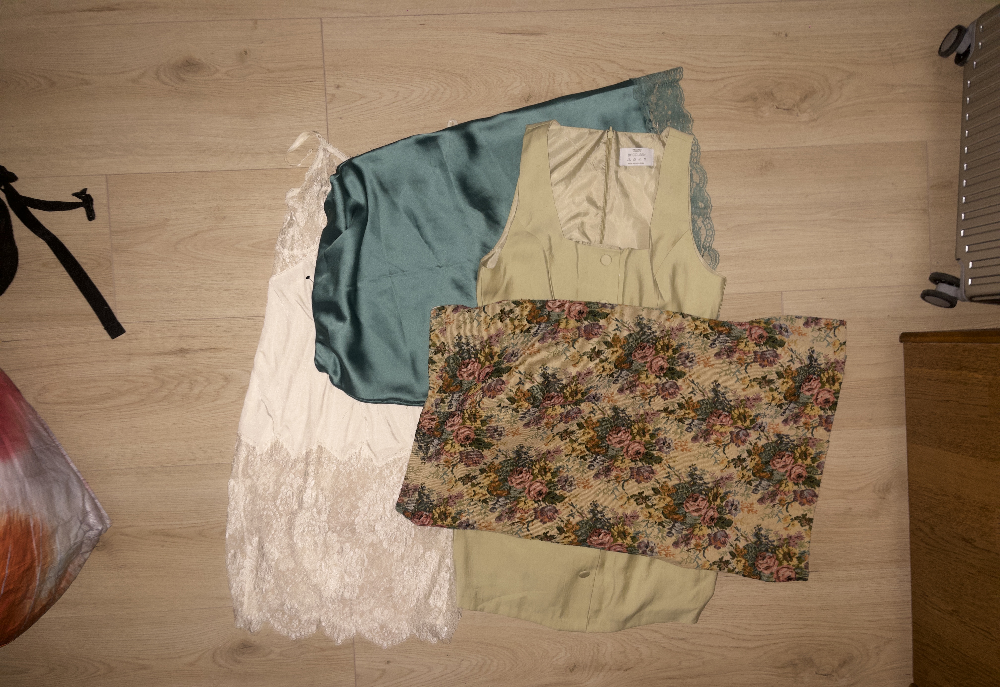
빈티지를 좋아하는 사람으로서, 내가 가진 옷들이 어떤 사람이 될 수 있을지 상상하는 데서 이 프로젝트는 시작되었다.
As a vintage lover, this started from imagining
what my own clothes could become on somebody else.
헤테로토피아
Heterotopia
하나의 옷장 안에는 사실 여러 개의 세계가 접혀 있다.
같은 서랍에서 나온 옷이라도, 그것을 걸치는 순간 전혀 다른 시간과 공간, 다른 자아로 이어질 수 있다고 생각했다.
미셸 푸코가 말한 헤테로토피아, 현실 속에 존재하지만 그 자체로 다른 질서를 가진 공간이라는 개념을 빌려, 하나의 캐릭터가 입는 옷마다 완전히 다른 차원의 무드로 이동하는 패션 에디토리얼을 그렸다.
A single wardrobe folds several worlds inside it. The same drawer can hold clothes that, the moment they're worn, pull you into a completely different time, space, even self. Borrowing Michel Foucault's heterotopia, a space that exists within reality but runs on its own separate order, this editorial follows one character who shifts into an entirely different dimension with every outfit. Dreamy, uncanny, suspended somewhere in-between, and quietly nostalgic.
몽환적이고 낯설고, 동시에 어딘가 그리운 정서.
레퍼런스는 전부 영화에서 가져왔다.
<그랜드 부다페스트 호텔>의 대칭적이고 채도 높은 프레이밍, <트루먼 쇼>의 인공적으로 완벽한 하늘과 세트,
The references are all films: The Grand Budapest Hotel for its symmetrical, saturated framing, The Truman Show for its too-perfect sky and stage-built world, That '70s Show for its lovably dated vintage interiors, 10 Things I Hate About You for its bright, hyper-real teen mood.
What they share is the feeling of standing inside a world someone else built.
키워드 artificial sky kitsch staged nostalgia vintage grainy
Keywords artificial sky kitsch staged nostalgia vintage grainy
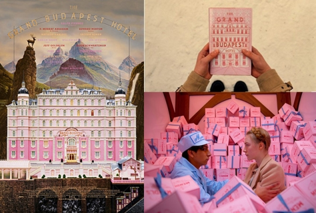
The Grand Budapest Hotel
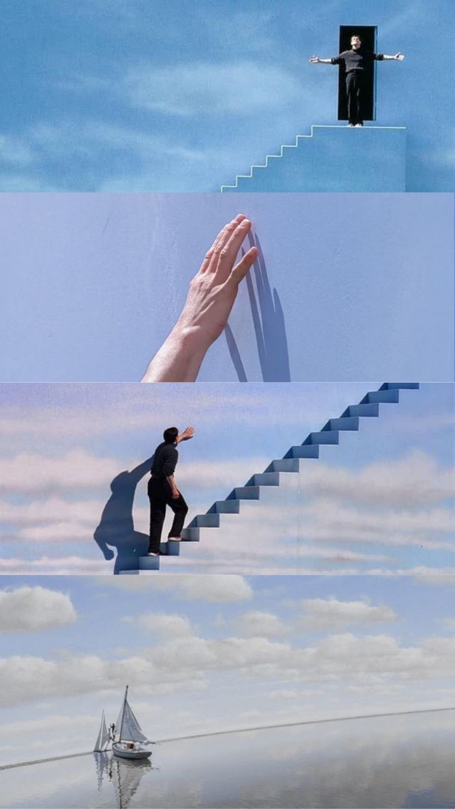
The Truman Show
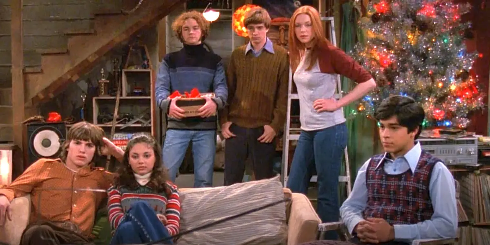
That '70s Show
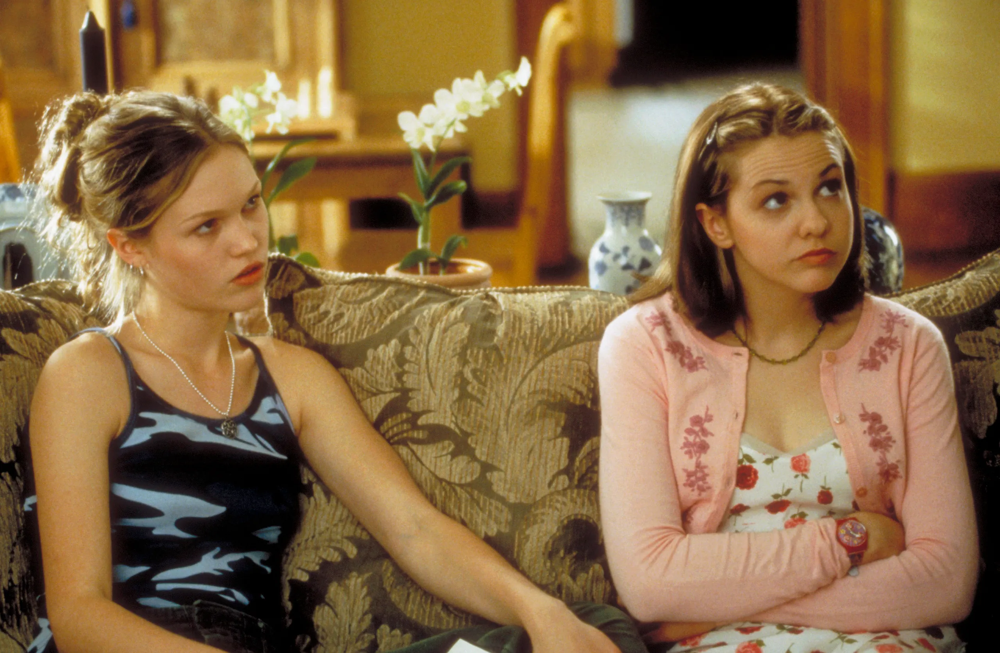
10 Things I Hate About You
필름
Films
같은 헤테로토피아 컨셉을 두 가지 방식으로 풀었다.
하나는 여러 장면을 넘나들며 상상 속 비현실적인 요소들을 그대로 살린 멀티 씬 컷이고, 다른 하나는 한 장면에 집중해 현실적인 움직임으로 완성한 싱글 씬 컷이다.
The same heterotopia concept, told two ways.
One is a multi-scene cut that jumps between spaces, keeping the unreal, imaginative elements intact. The other is a single-scene cut, focused on one moment and played straight, realistic.
멀티 씬 컷Multi-Scene Cut
싱글 씬 컷Single-Scene Cut
인스타그램에 두 버전을 각각 올려본 결과, "Before You Walk Out My Life"에 맞춰 스토리라인을 잡은 싱글 씬 컷의 조회수가 약 6배 더 높았다.
예술적으로 화려한 것보다, 누구나 쉽게 이해할 수 있는 콘텐츠를 만드는 것이 더 중요하다는 걸 알 수 있었다.
Posted side by side on Instagram, the single-scene cut, timed to "Before You Walk Out My Life" with a clearer storyline, earned roughly 6x the views.
It turned out that making content anyone could easily understand mattered more than making something artistic.
AI 파이프라인을 통한 일관성
Consistency Through an AI Pipeline
가장 먼저 만든 건 하나의 캐릭터였다.
내 옷장을 떠올렸을 때 나오는 이미지는 스포티하면서도 어딘가 내향적인, 살짝 빈티지한 무드의 사람이었다.
그 인상을 하나의 얼굴과 체형으로 고정하기 위해 흰 배경과 흰 베이스 의상을 기준으로 9컷의 각도와 표정을 뽑아 캐릭터 시트를 만들었고, 이후 모든 컷에서 이 시트를 기준으로 얼굴과 비율을 맞췄다.
The first thing built wasn't a scene, it was a person.
My wardrobe reads sporty, a little introverted, quietly vintage, so that's the character locked in: one face, one build, fixed across 9 angles and expressions against a plain white background and base outfit.
Every shot after this used the sheet as the anchor for face and proportion.
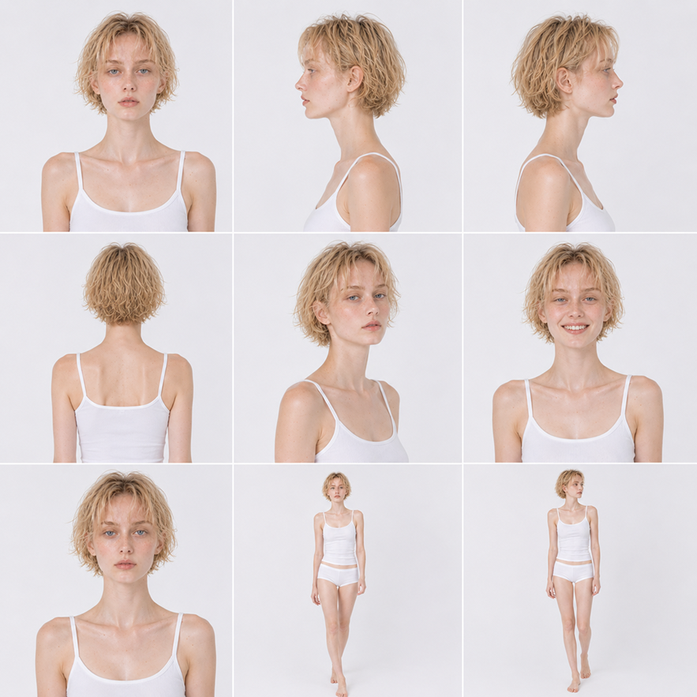
실제로 갖고 있는 옷들을 기준으로 네 가지 코디를 프롬프트만으로 재구성했다.
원단의 광택과 스커트 밑단의 레이스 마감, 상의와 스커트가 겹치는 순서까지 텍스트로 지정해야 했는데, 특히 옷깃 모양과 허리 봉제선 위치, 어깨선의 각도 같은 디테일을 정확히 짚어주지 않으면 실루엣이 무너졌다.
옷의 레이어 순서를 안에서 겉까지 명시하는 것도 필수였다.
Four outfits were rebuilt from the clothes I actually own, using prompting alone.
Fabric sheen, a skirt's lace hem, even the order layers overlap all had to be spelled out in text.
Getting the collar shape, waist seam placement, and shoulder-line angle exactly right mattered most, skip those and the silhouette falls apart.
Naming the layering order, innermost piece to outerwear, was non-negotiable too.
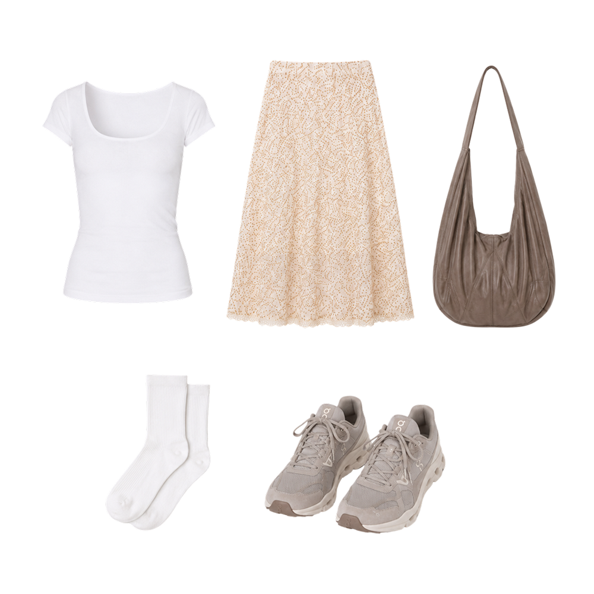
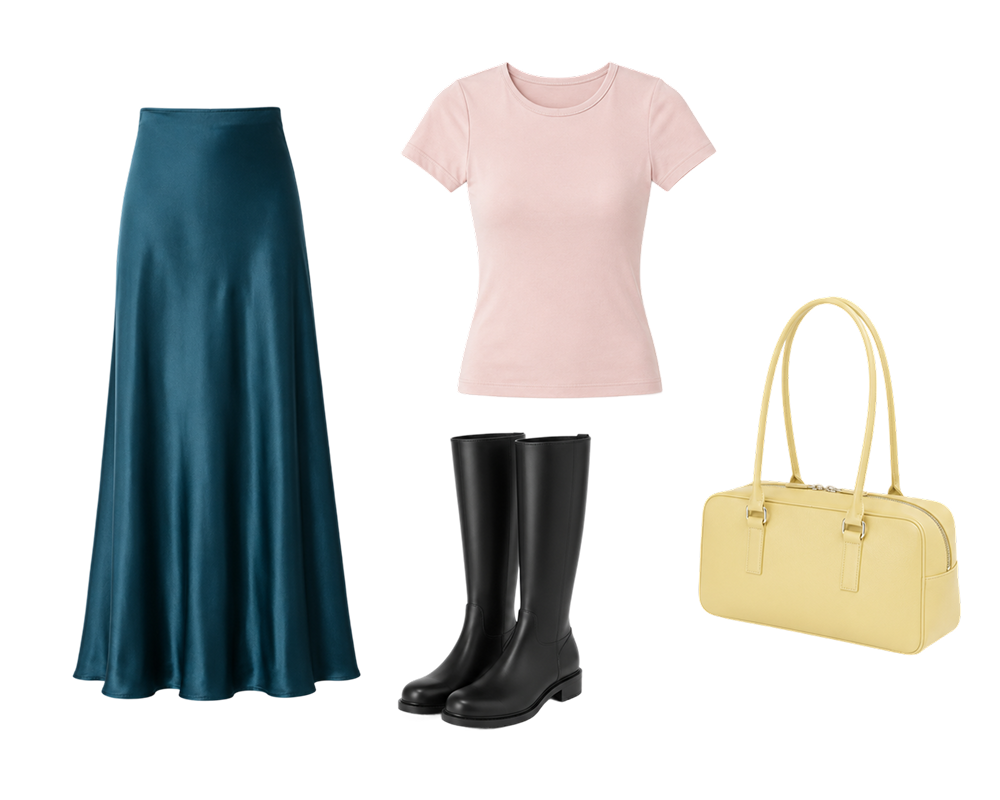
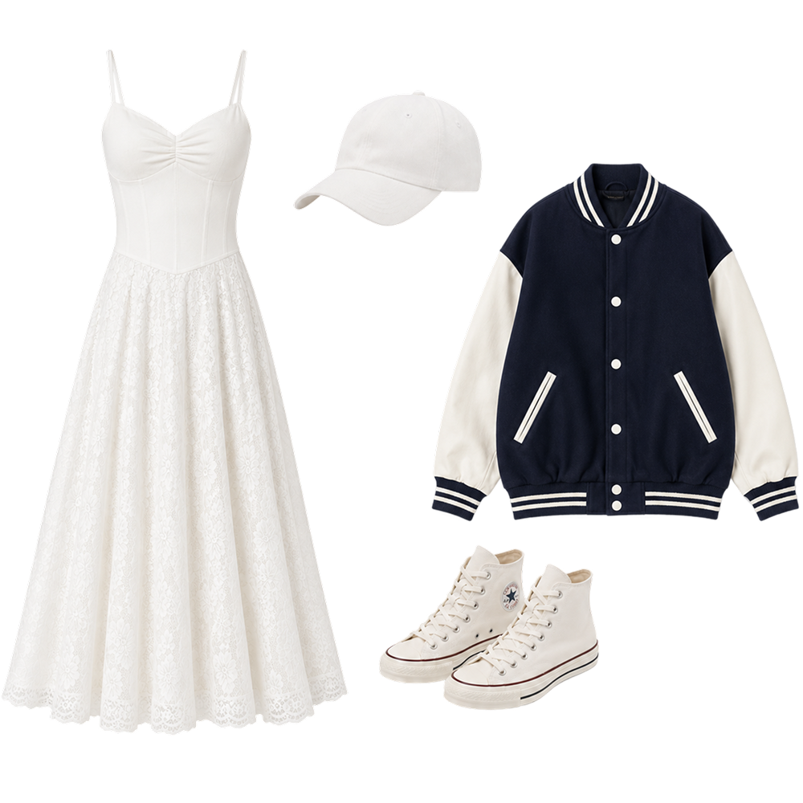
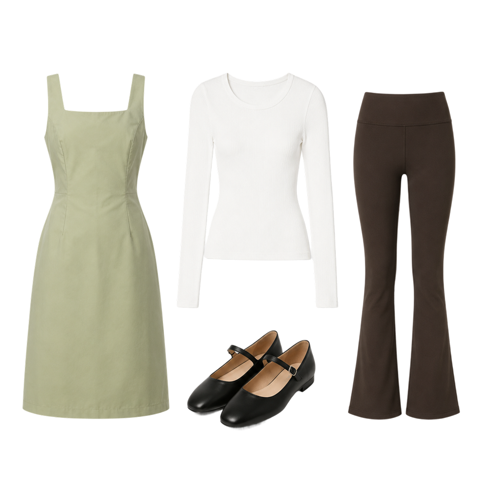
완성된 코디를 캐릭터 시트에 입혀 ComfyUI로 착용샷을 만들었다.
스튜디오 느낌 대신 아이폰으로 찍은 듯한 자연스러운 구도와 자연광을 기준으로 디렉팅해, 생성 티가 나지 않는 리얼한 톤을 잡았다.
The finished outfits were applied to the character sheet in ComfyUI to generate the wearing shots.
Direction leaned toward an iPhone-photo feel over a studio look, natural light, casual framing, so the result reads real rather than generated.
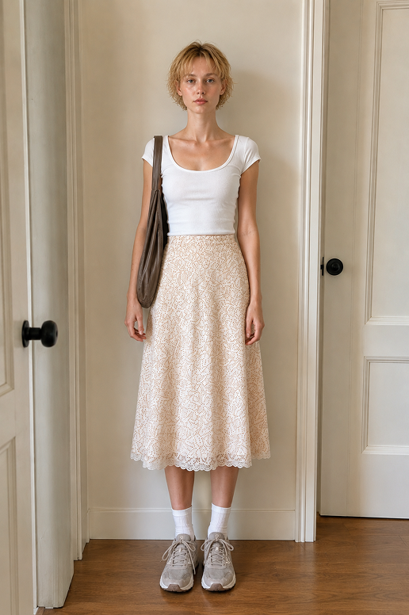
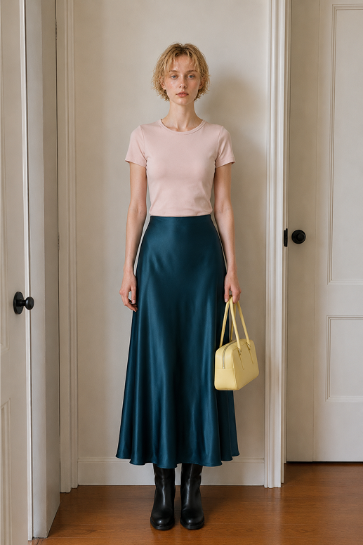
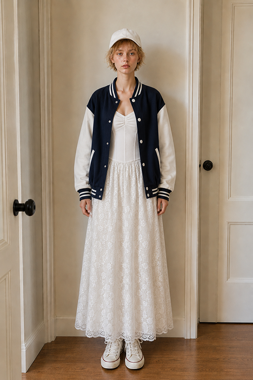
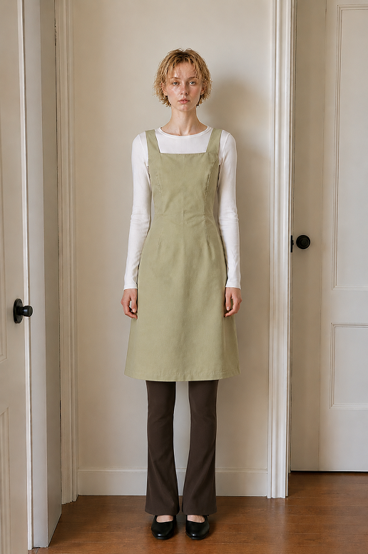
같은 공간이지만 네 가지 다른 세계처럼 보이도록, 미드저니 무드보드를 기반으로 네 개의 씬을 만들었다.
색감과 소품, 분위기를 각각 다르게 잡아 하나의 공간 안에 여러 질서가 공존한다는 헤테로토피아 개념을 시각적으로 드러냈다.
이후 영상으로 자연스럽게 이어지도록 불필요한 소품과 잡음을 제거한 배경으로 다시 정리했다.
Four scenes were built from Midjourney moodboards, same physical space, styled to feel like four different worlds.
Color, props, and mood were each pushed in a different direction, a visual way of saying the heterotopia idea: several orders coexisting inside one space.
Backgrounds were then cleaned up, stripped of clutter, so each scene could move naturally once it became video.
대표 씬을 슬라이더로 비교해볼 수 있고, 오른쪽 썸네일을 클릭하면 다른 씬으로 바뀐다.
The scene on the left is shown with a before/after slider. Click a thumbnail on the right to switch scenes.
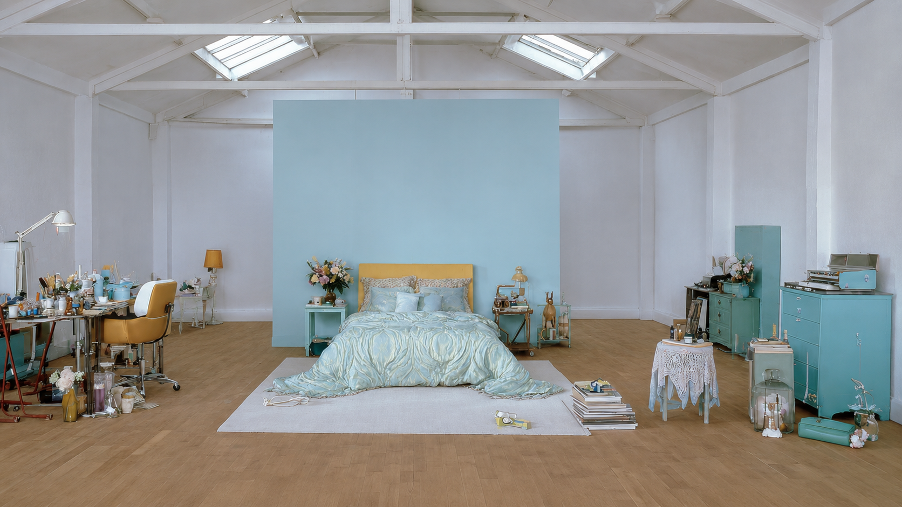
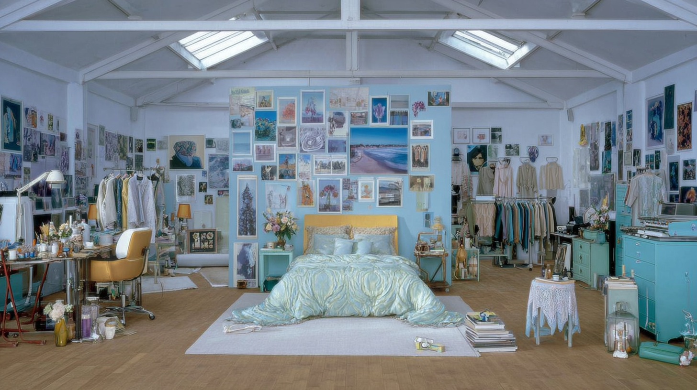
정리된 배경 위에 캐릭터마다 정해둔 동작을 ComfyUI와 나노바나나로 더했다.
정지된 장면이 아니라, 다음 순간 무엇을 할지 알 수 있는 순간을 잡는 데 집중했다.
On top of the cleaned backgrounds, ComfyUI and Nano-Banana added a specific motion for each character.
The goal wasn't a static pose. It was catching a moment that hints at what happens next.
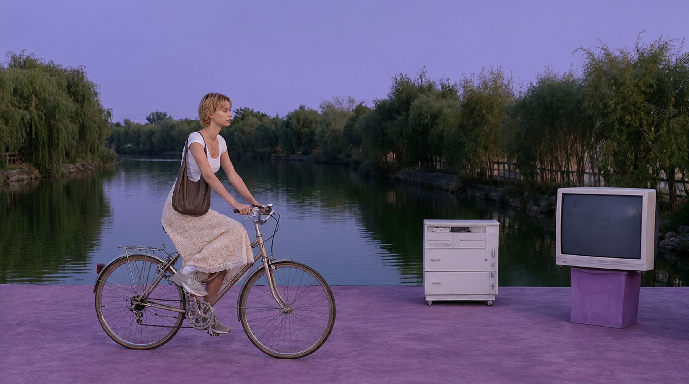
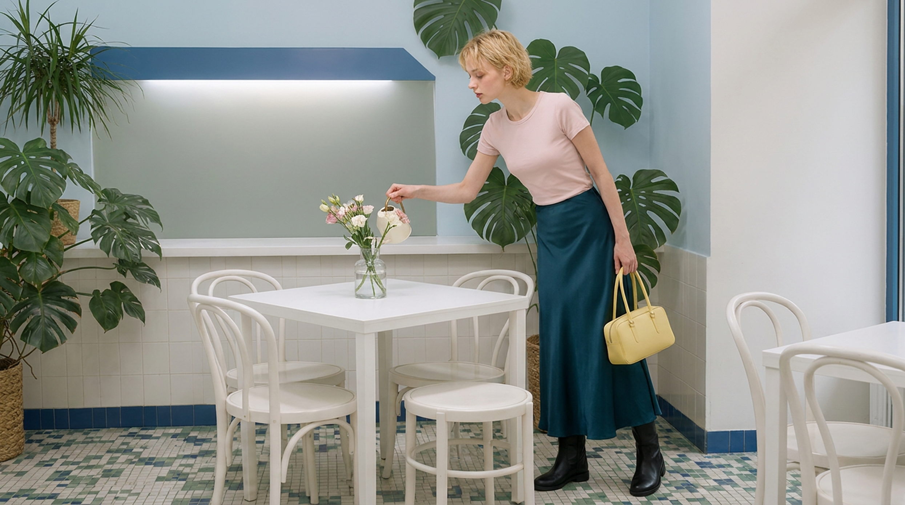
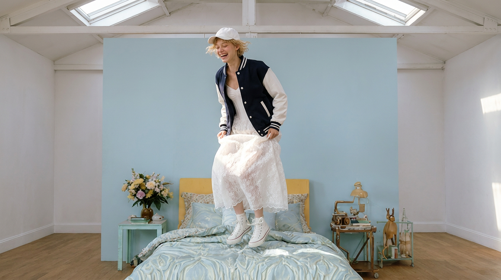
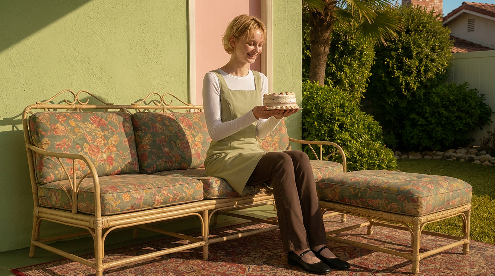
이 동작들을 클링(Kling AI)으로 영상화했다.
네 개의 씬 모두 같은 캐릭터, 같은 공간이지만 완전히 다른 세계처럼 보이도록 만든 결과물이다.
상상이 꽃처럼 피어난다는 의미로, 각 씬의 모션에 맞춰 그 세계와 어울리는 꽃이 함께 피어나도록 연출했다.
대표 영상이 왼쪽에 재생되고, 오른쪽 썸네일을 누르면 다른 씬의 영상으로 바뀐다.
Those motions were turned into video with Kling AI, four scenes, same character, same space, each reading like an entirely different world.
To carry the idea that imagination blooms, a flower suited to each world blooms in sync with that scene's motion.
The main video plays on the left, click a thumbnail on the right to switch scenes.
시네마틱 버전은 순서가 조금 달랐다.
손으로 그린 스토리보드를 기준으로 GPT에 프레임별로 일관되게 이미지를 생성하도록 시킨 뒤, 그 프레임들을 클링으로 이어 붙여 영상을 만들었다.
이 페이지 맨 위에서 재생되는 영상이 바로 그 결과물이다.
The cinematic version worked in a different order.
GPT generated each frame consistently based on a hand-drawn storyboard, then Kling stitched those frames into motion.
That's the video autoplaying at the top of this page.
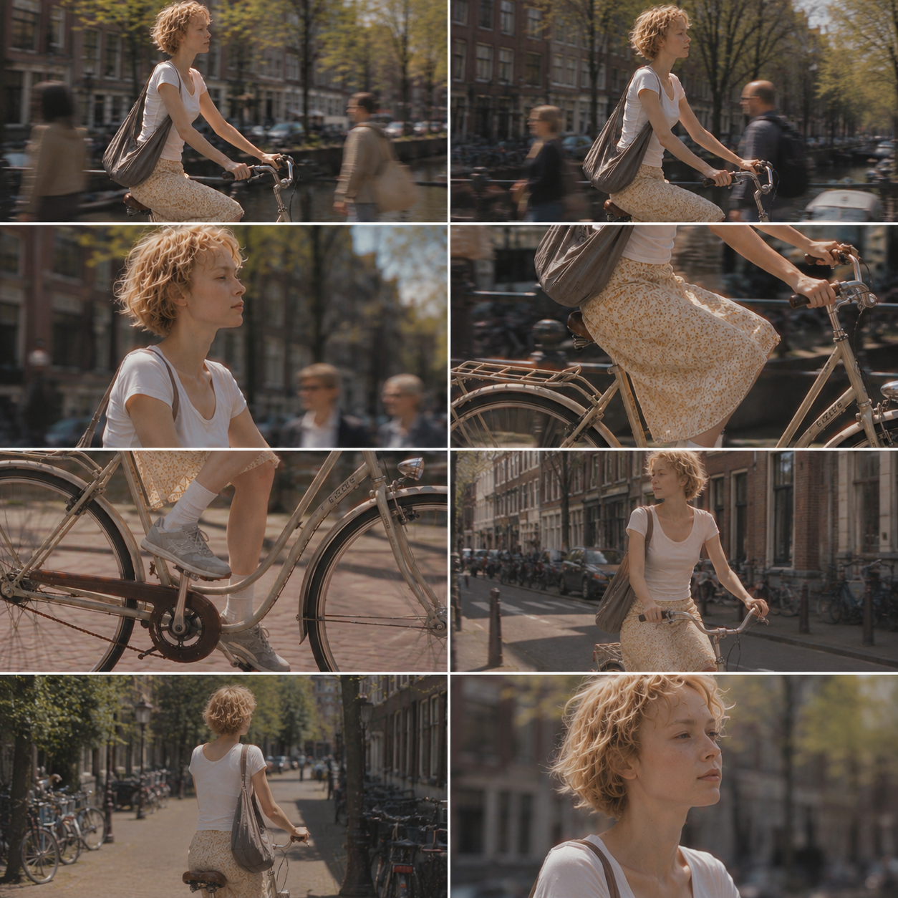
무드보드Moodboard
오리지널 촬영본Original Footage